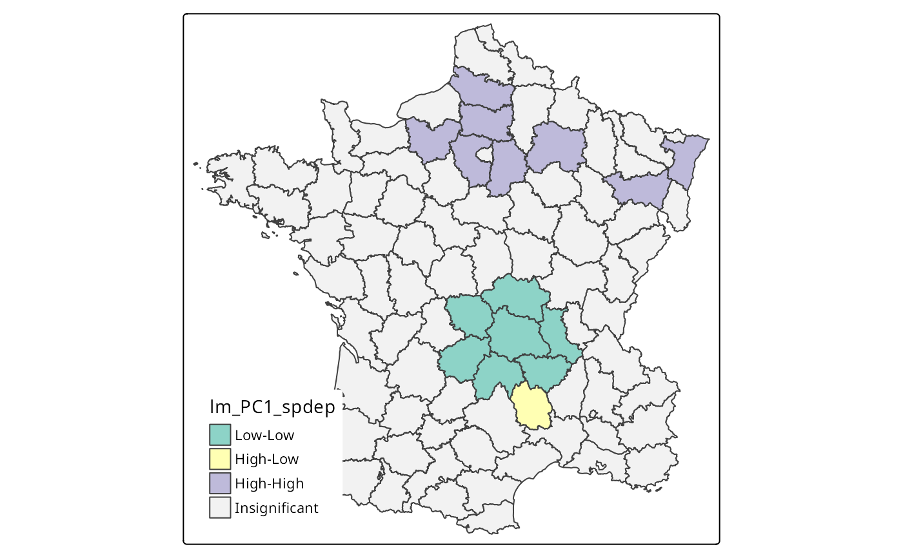
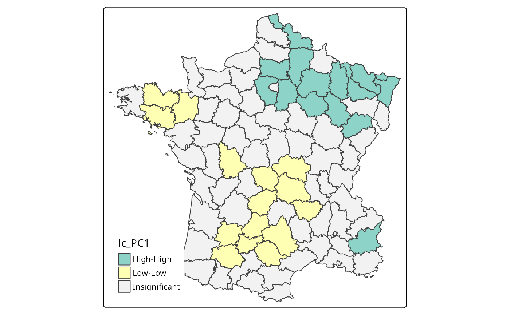
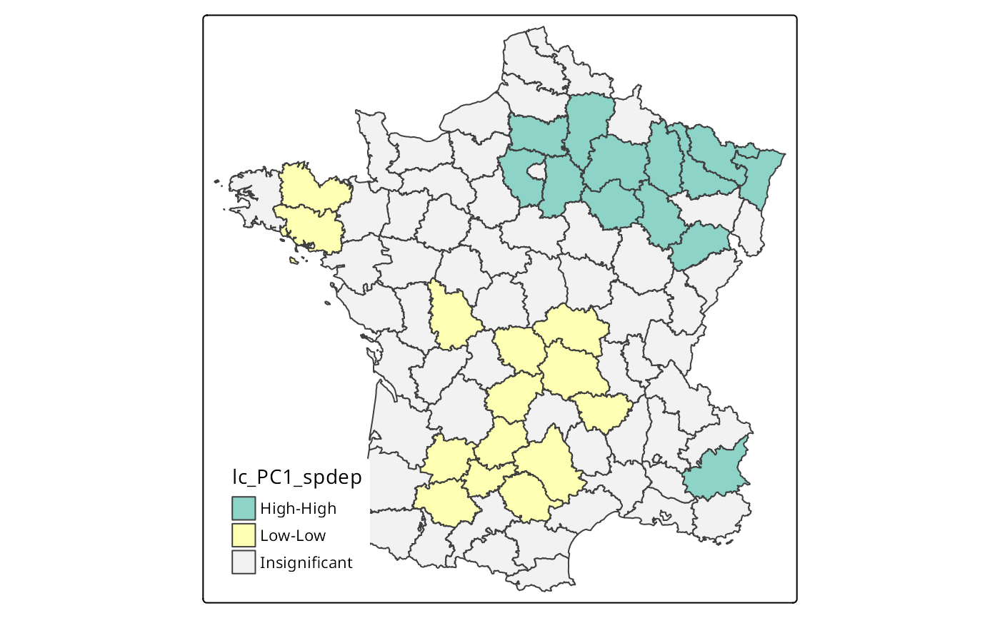
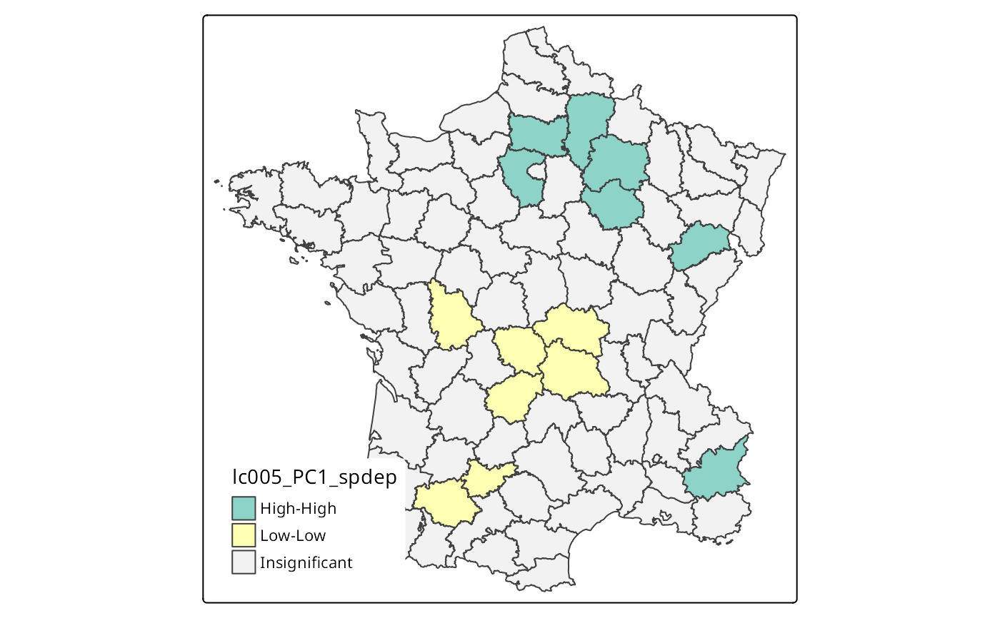
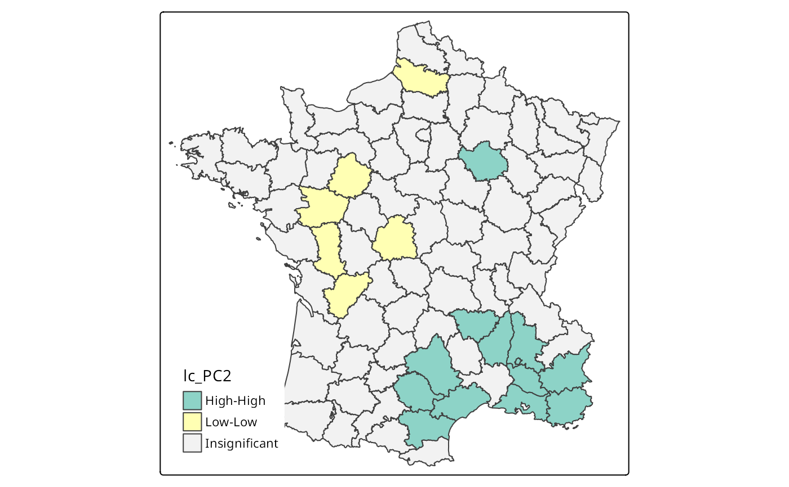
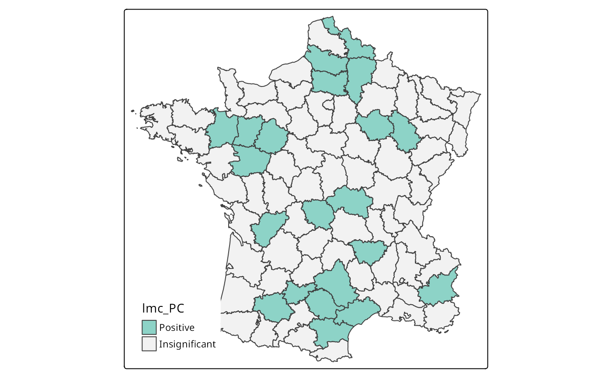
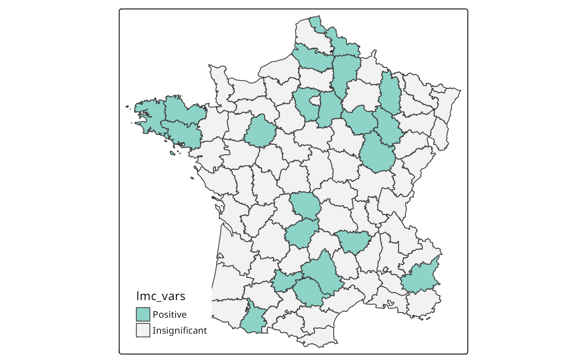

Compute Local Geary statistic
localC.RdThe Local Geary is a local adaptation of Geary's C statistic of spatial autocorrelation. The Local Geary uses squared differences to measure dissimilarity unlike the Local Moran. Low values of the Local Geary indicate positive spatial autocorrelation and large refers to negative spatial autocorrelation.
Inference for the Local Geary is based on a permutation approach which compares the observed value to the reference distribution under spatial randomness. localC_perm() returns a pseudo p-value. This is not an analytical p-value and is based on the number of permutations and as such should be used with care.
Usage
localC(x, ..., zero.policy=NULL)
# Default S3 method
localC(x, listw, ..., zero.policy=attr(listw, "zero.policy"))
# S3 method for class 'formula'
localC(formula, data, listw, ..., zero.policy=attr(listw, "zero.policy"))
# S3 method for class 'list'
localC(x, listw, ..., zero.policy=attr(listw, "zero.policy"))
# S3 method for class 'matrix'
localC(x, listw, ..., zero.policy=attr(listw, "zero.policy"))
# S3 method for class 'data.frame'
localC(x, listw, ..., zero.policy=attr(listw, "zero.policy"))
localC_perm(x, ..., zero.policy=NULL, iseed=NULL, no_repeat_in_row=FALSE)
# Default S3 method
localC_perm(x, listw, nsim = 499, alternative = "two.sided", ...,
zero.policy=attr(listw, "zero.policy"), iseed=NULL, no_repeat_in_row=FALSE)
# S3 method for class 'formula'
localC_perm(formula, data, listw, nsim = 499,
alternative = "two.sided", ..., zero.policy=attr(listw, "zero.policy"), iseed=NULL,
no_repeat_in_row=FALSE)Arguments
- x
a numeric vector, numeric matrix, or list. See details for more.
- formula
A one-sided formula determining which variables to be used.
- listw
a
listwobject created for example bynb2listw.- data
Used when a formula is provided. A matrix or data frame containing the variables in the formula
formula.- nsim
The number of simulations to be used for permutation test.
- alternative
A character defining the alternative hypothesis. Must be one of
"two.sided","less"or"greater".- ...
other arguments passed to methods.
- zero.policy
default
attr(listw, "zero.policy")as set whenlistwwas created, if attribute not set, use global option value; if TRUE assign zero to the lagged value of zones without neighbours, if FALSE assign NA.- iseed
default NULL, used to set the seed;the output will only be reproducible if the count of CPU cores across which computation is distributed is the same
- no_repeat_in_row
default
FALSE, ifTRUE, sample conditionally in each row without replacements to avoid duplicate values, https://github.com/r-spatial/spdep/issues/124
Details
The Local Geary can be extended to a multivariate context. When x is a numeric vector, the univariate Local Geary will be calculated. To calculate the multivariate Local Moran provide either a list or a matrix. When x is a list, each element must be a numeric vector of the same length and of the same length as the neighbours in listw. In the case that x is a matrix the number of rows must be the same as the length of the neighbours in listw.
While not required in the univariate context, the standardized Local Geary is calculated. The multivariate Local Geary is always standardized.
The univariate Local Geary is calculated as \(c_i = \sum_j w_{ij}(x_i - x_j)^2\) and the multivariate Local Geary is calculated as \(c_{k,i} = \sum_{v=1}^{k} c_{v,i}\) as described in Anselin (2019).
Value
A numeric vector containing Local Geary statistic with attribute pseudo-p when localC_perm() is used. pseudo-p is an 8 column matrix containing
- E.Ci
expectation of the Local Geary statistic based on permutation sample
- Var.Ci
variance of Local Geary based on permutation sample
- Z.Ci
standard deviate of Local Geary based on permutation sample
- Pr()
p-value of Local Geary statistic using
pnorm()using standard deviates based on permutation sample means and standard deviations- Pr() Sim
rank()andpunif()of observed statistic rank for [0, 1] p-values usingalternative=- Pr(folded) Sim
the simulation folded [0, 0.5] range ranked p-value (based on https://github.com/pysal/esda/blob/4a63e0b5df1e754b17b5f1205b8cadcbecc5e061/esda/crand.py#L211-L213)
- Skewness
the output of
e1071::skewness()for the permutation samples underlying the standard deviates- Kurtosis
the output of
e1071::kurtosis()for the permutation samples underlying the standard deviates
References
Anselin, L. (1995), Local Indicators of Spatial Association—LISA. Geographical Analysis, 27: 93-115. doi:10.1111/j.1538-4632.1995.tb00338.x
Anselin, L. (2019), A Local Indicator of Multivariate Spatial Association: Extending Gearys c. Geogr Anal, 51: 133-150. doi:10.1111/gean.12164
Author
Josiah Parry josiah.parry@gmail.com and Roger Bivand
Examples
orig <- spData::africa.rook.nb
listw <- nb2listw(orig)
x <- spData::afcon$totcon
(A <- localC(x, listw))
#> [1] 0.39025457 0.50460439 0.15303047 2.90814878 3.40006901 0.17103368
#> [7] 0.29947832 0.72444806 2.30617282 5.70252541 2.23161263 0.17833029
#> [13] 0.18420002 0.18680408 0.37851643 0.11056720 0.14814835 0.17257920
#> [19] 0.03254150 0.18992772 0.08749322 3.71970760 0.09566918 0.26112918
#> [25] 0.09505331 2.99934478 1.17465032 1.64868780 0.87901004 0.05909537
#> [31] 2.54591475 3.85570655 2.99413462 0.96084992 0.80678832 1.56869350
#> [37] 0.86422915 0.38817470 0.23425755 1.26191610 1.34455327 1.80707481
listw1 <- nb2listw(droplinks(sym.attr.nb(orig), 3, sym=TRUE), zero.policy=TRUE)
#> Warning: some observations have no neighbours
#> Warning: neighbour object has 2 sub-graphs
(A1 <- localC(x, listw1, zero.policy=FALSE))
#> [1] 0.39025457 0.57491918 NA 2.90814878 3.40006901 0.17103368
#> [7] 0.29947832 0.72444806 2.30617282 5.70252541 2.23161263 0.17833029
#> [13] 0.18420002 0.18680408 0.37851643 0.11056720 0.14814835 0.17257920
#> [19] 0.03254150 0.18992772 0.08749322 3.71970760 0.09566918 0.26112918
#> [25] 0.09505331 2.99934478 1.17465032 1.64868780 0.87901004 0.05909537
#> [31] 2.54591475 3.85570655 2.99413462 0.96084992 0.80678832 1.56869350
#> [37] 0.86422915 0.38817470 0.23425755 1.26191610 1.34455327 1.80707481
(A2 <- localC(x, listw1, zero.policy=TRUE))
#> [1] 0.39025457 0.57491918 0.00000000 2.90814878 3.40006901 0.17103368
#> [7] 0.29947832 0.72444806 2.30617282 5.70252541 2.23161263 0.17833029
#> [13] 0.18420002 0.18680408 0.37851643 0.11056720 0.14814835 0.17257920
#> [19] 0.03254150 0.18992772 0.08749322 3.71970760 0.09566918 0.26112918
#> [25] 0.09505331 2.99934478 1.17465032 1.64868780 0.87901004 0.05909537
#> [31] 2.54591475 3.85570655 2.99413462 0.96084992 0.80678832 1.56869350
#> [37] 0.86422915 0.38817470 0.23425755 1.26191610 1.34455327 1.80707481
run <- FALSE
if (require(rgeoda, quietly=TRUE)) run <- TRUE
#>
#> Attaching package: ‘rgeoda’
#> The following object is masked from ‘package:spdep’:
#>
#> skater
if (run) {
W <- create_weights(as.numeric(length(x)))
for (i in 1:length(listw$neighbours)) {
set_neighbors_with_weights(W, i, listw$neighbours[[i]], listw$weights[[i]])
update_weights(W)
}
set.seed(1)
B <- local_geary(W, data.frame(x))
all.equal(A, lisa_values(B))
}
#> [1] TRUE
if (run) {
set.seed(1)
C <- localC_perm(x, listw, nsim = 499, conditional=TRUE,
alternative="two.sided")
cor(ifelse(lisa_pvalues(B) < 0.5, lisa_pvalues(B), 1-lisa_pvalues(B)),
attr(C, "pseudo-p")[,6])
}
#> [1] 0.985611
# pseudo-p values probably wrongly folded https://github.com/GeoDaCenter/rgeoda/issues/28
# \donttest{
tmap_ok <- FALSE
if (require(tmap, quietly=TRUE)) tmap_ok <- TRUE
#> Breaking News: tmap 3.x is retiring. Please test v4, e.g. with
#> remotes::install_github('r-tmap/tmap')
if (run) {
# doi: 10.1111/gean.12164
guerry_path <- system.file("extdata", "Guerry.shp", package = "rgeoda")
g <- st_read(guerry_path)[, 7:12]
cor(st_drop_geometry(g)) #(Tab. 1)
lw <- nb2listw(poly2nb(g))
moran(g$Crm_prs, lw, n=nrow(g), S0=Szero(lw))$I
moran(g$Crm_prp, lw, n=nrow(g), S0=Szero(lw))$I
moran(g$Litercy, lw, n=nrow(g), S0=Szero(lw))$I
moran(g$Donatns, lw, n=nrow(g), S0=Szero(lw))$I
moran(g$Infants, lw, n=nrow(g), S0=Szero(lw))$I
moran(g$Suicids, lw, n=nrow(g), S0=Szero(lw))$I
}
#> Reading layer `Guerry' from data source
#> `/home/rsb/lib/r_libs/rgeoda/extdata/Guerry.shp' using driver `ESRI Shapefile'
#> Simple feature collection with 85 features and 29 fields
#> Geometry type: MULTIPOLYGON
#> Dimension: XY
#> Bounding box: xmin: 47680 ymin: 1703258 xmax: 1031401 ymax: 2677441
#> Projected CRS: NTF (Paris) / Lambert zone II
#> [1] 0.4016812
if (run) {
o <- prcomp(st_drop_geometry(g), scale.=TRUE)
cor(st_drop_geometry(g), o$x[,1:2])^2 #(Tab. 2)
}
#> PC1 PC2
#> Crm_prs 0.009286863 0.418851254
#> Crm_prp 0.561825664 0.009377232
#> Litercy 0.560570048 0.020095011
#> Donatns 0.024138865 0.586720363
#> Infants 0.436025658 0.012817054
#> Suicids 0.548623327 0.152958961
if (run) {
g$PC1 <- o$x[, "PC1"]
brks <- c(min(g$PC1), natural_breaks(k=6, g["PC1"]), max(g$PC1))
if (tmap_ok) {
tmap4 <- packageVersion("tmap") >= "3.99"
if (tmap4) {
tm_shape(g) + tm_polygons(fill="PC1",
fill.scale=tm_scale(values="brewer.rd_yl_gn", breaks=brks,
midpoint=0), fill.legend=tm_legend(position=tm_pos_in("left", "bottom"),
frame=FALSE, item.r=0))
} else {
tm_shape(g) + tm_fill("PC1", breaks=brks, midpoint=0) +
tm_borders() # Fig. 1
}
} else {
pplot(g["PC1"], breaks=brks)
}
}
if (run) {
g$PC2 <- -1*o$x[, "PC2"] # eigenvalue sign arbitrary
brks <- c(min(g$PC2), natural_breaks(k=6, g["PC2"]), max(g$PC2))
if (tmap_ok) {
if (tmap4) {
tm_shape(g) + tm_polygons(fill="PC2",
fill.scale=tm_scale(values="brewer.rd_yl_gn", breaks=brks,
midpoint=0), fill.legend=tm_legend(position=tm_pos_in("left", "bottom"),
frame=FALSE, item.r=0))
} else {
tm_shape(g) + tm_fill("PC2", breaks=brks, midpoint=0) +
tm_borders() # Fig. 2
}
} else {
plot(g["PC2"], breaks=brks)
}
}
if (run) {
w <- queen_weights(g)
lm_PC1 <- local_moran(w, g["PC1"], significance_cutoff=0.01,
permutations=99999)
g$lm_PC1 <- factor(lisa_clusters(lm_PC1), levels=0:4,
labels=lisa_labels(lm_PC1)[1:5])
is.na(g$lm_PC1) <- g$lm_PC1 == "Not significant"
g$lm_PC1 <- droplevels(g$lm_PC1)
if (tmap_ok) {
if (tmap4) {
tm_shape(g) + tm_polygons(fill="lm_PC1",
fill.scale=tm_scale(values="brewer.set3", value.na="gray95",
label.na="Insignificant"),
fill.legend=tm_legend(position=tm_pos_in("left", "bottom"),
frame=FALSE, item.r=0))
} else {
tm_shape(g) + tm_fill("lm_PC1", textNA="Insignificant",
colorNA="gray95") + tm_borders() # Fig. 3
}
} else {
plot(g["lm_PC1"])
}
}
if (run) {
set.seed(1)
lm_PC1_spdep <- localmoran_perm(g$PC1, lw, nsim=9999)
q <- attr(lm_PC1_spdep, "quadr")$pysal
g$lm_PC1_spdep <- q
is.na(g$lm_PC1_spdep) <- lm_PC1_spdep[,6] > 0.02 # note folded p-values
g$lm_PC1_spdep <- droplevels(g$lm_PC1_spdep)
if (tmap_ok) {
if (tmap4) {
tm_shape(g) + tm_polygons(fill="lm_PC1_spdep",
fill.scale=tm_scale(values="brewer.set3", value.na="gray95",
label.na="Insignificant"),
fill.legend=tm_legend(position=tm_pos_in("left", "bottom"),
frame=FALSE, item.r=0))
} else {
tm_shape(g) + tm_fill("lm_PC1_spdep", textNA="Insignificant",
colorNA="gray95") + tm_borders() # rep. Fig. 3
}
} else {
plot(g["lm_PC1_spdep"])
}
}

if (run) {
lg_PC1 <- local_g(w, g["PC1"], significance_cutoff=0.01,
permutations=99999)
g$lg_PC1 <- factor(lisa_clusters(lg_PC1), levels=0:2,
labels=lisa_labels(lg_PC1)[0:3])
is.na(g$lg_PC1) <- g$lg_PC1 == "Not significant"
g$lg_PC1 <- droplevels(g$lg_PC1)
if (tmap_ok) {
if (tmap4) {
tm_shape(g) + tm_polygons(fill="lg_PC1",
fill.scale=tm_scale(values="brewer.set3", value.na="gray95",
label.na="Insignificant"),
fill.legend=tm_legend(position=tm_pos_in("left", "bottom"),
frame=FALSE, item.r=0))
} else {
tm_shape(g) + tm_fill("lg_PC1", textNA="Insignificant",
colorNA="gray95") + tm_borders() # Fig. 4 (wrong)
}
} else {
plot(g["lg_PC1"])
}
g$lg_PC1a <- cut(g$PC1, c(-Inf, mean(g$PC1), Inf), labels=c("Low", "High"))
is.na(g$lg_PC1a) <- lisa_pvalues(lg_PC1) >= 0.01
g$lg_PC1a <- droplevels(g$lg_PC1a)
if (tmap_ok) {
if (tmap4) {
tm_shape(g) + tm_polygons(fill="lg_PC1a",
fill.scale=tm_scale(values="brewer.set3", value.na="gray95",
label.na="Insignificant"),
fill.legend=tm_legend(position=tm_pos_in("left", "bottom"),
frame=FALSE, item.r=0))
} else {
tm_shape(g) + tm_fill("lg_PC1a", textNA="Insignificant",
colorNA="gray95") + tm_borders() # Fig. 4 (guess)
}
} else {
plot(g["lg_PC1"])
}
}
if (run) {
lc_PC1 <- local_geary(w, g["PC1"], significance_cutoff=0.01,
permutations=99999)
g$lc_PC1 <- factor(lisa_clusters(lc_PC1), levels=0:4,
labels=lisa_labels(lc_PC1)[1:5])
is.na(g$lc_PC1) <- g$lc_PC1 == "Not significant"
g$lc_PC1 <- droplevels(g$lc_PC1)
if (tmap_ok) {
if (tmap4) {
tm_shape(g) + tm_polygons(fill="lc_PC1",
fill.scale=tm_scale(values="brewer.set3", value.na="gray95",
label.na="Insignificant"),
fill.legend=tm_legend(position=tm_pos_in("left", "bottom"),
frame=FALSE, item.r=0))
} else {
tm_shape(g) + tm_fill("lc_PC1", textNA="Insignificant",
colorNA="gray95") + tm_borders() # Fig. 5
}
} else {
plot(g["lc_PC1"])
}
}

if (run) {
set.seed(1)
system.time(lc_PC1_spdep <- localC_perm(g$PC1, lw, nsim=9999,
alternative="two.sided"))
}
#> user system elapsed
#> 0.340 0.001 0.343
if (run) {
if (require(parallel, quietly=TRUE)) {
ncpus <- max(2L, detectCores(logical=FALSE), na.rm = TRUE)-1L
# test with single core
if (ncpus > 1L) ncpus <- 1L
cores <- get.coresOption()
set.coresOption(ncpus)
system.time(lmc_PC1_spdep1 <- localC_perm(g$PC1, lw, nsim=9999,
alternative="two.sided", iseed=1))
set.coresOption(cores)
}
}
#> [1] 1
if (run) {
g$lc_PC1_spdep <- attr(lc_PC1_spdep, "cluster")
is.na(g$lc_PC1_spdep) <- attr(lc_PC1_spdep, "pseudo-p")[,6] > 0.01
g$lc_PC1_spdep <- droplevels(g$lc_PC1_spdep)
if (tmap_ok) {
if (tmap4) {
tm_shape(g) + tm_polygons(fill="lc_PC1_spdep",
fill.scale=tm_scale(values="brewer.set3", value.na="gray95",
label.na="Insignificant"),
fill.legend=tm_legend(position=tm_pos_in("left", "bottom"),
frame=FALSE, item.r=0))
} else {
tm_shape(g) + tm_fill("lc_PC1_spdep", textNA="Insignificant",
colorNA="gray95") + tm_borders() # rep. Fig. 5
}
} else {
plot(g["lc_PC1_spdep"])
}
}

if (run) {
g$both_PC1 <- interaction(g$lc_PC1, g$lm_PC1)
g$both_PC1 <- droplevels(g$both_PC1)
if (tmap_ok) {
if (tmap4) {
tm_shape(g) + tm_polygons(fill="both_PC1",
fill.scale=tm_scale(values="brewer.set3", value.na="gray95",
label.na="Insignificant"),
fill.legend=tm_legend(position=tm_pos_in("left", "bottom"),
frame=FALSE, item.r=0))
} else {
tm_shape(g) + tm_fill("both_PC1", textNA="Insignificant",
colorNA="gray95") + tm_borders() # Fig. 6
}
} else {
plot(g["both_PC1"])
}
}
if (run) {
lc005_PC1 <- local_geary(w, g["PC1"], significance_cutoff=0.005,
permutations=99999)
g$lc005_PC1 <- factor(lisa_clusters(lc005_PC1), levels=0:4,
labels=lisa_labels(lc005_PC1)[1:5])
is.na(g$lc005_PC1) <- g$lc005_PC1 == "Not significant"
g$lc005_PC1 <- droplevels(g$lc005_PC1)
if (tmap_ok) {
if (tmap4) {
tm_shape(g) + tm_polygons(fill="lc005_PC1",
fill.scale=tm_scale(values="brewer.set3", value.na="gray95",
label.na="Insignificant"),
fill.legend=tm_legend(position=tm_pos_in("left", "bottom"),
frame=FALSE, item.r=0))
} else {
tm_shape(g) + tm_fill("lc005_PC1", textNA="Insignificant",
colorNA="gray95") + tm_borders() # Fig. 7
}
} else {
plot(g["lc005_PC1"])
}
if (run) {
g$lc005_PC1_spdep <- attr(lc_PC1_spdep, "cluster")
is.na(g$lc005_PC1_spdep) <- attr(lc_PC1_spdep, "pseudo-p")[,6] > 0.005
g$lc005_PC1_spdep <- droplevels(g$lc005_PC1_spdep)
if (tmap_ok) {
if (tmap4) {
tm_shape(g) + tm_polygons(fill="lc005_PC1_spdep",
fill.scale=tm_scale(values="brewer.set3", value.na="gray95",
label.na="Insignificant"),
fill.legend=tm_legend(position=tm_pos_in("left", "bottom"),
frame=FALSE, item.r=0))
} else {
tm_shape(g) + tm_fill("lc005_PC1_spdep", textNA="Insignificant",
colorNA="gray95") + tm_borders() # rep. Fig. 7
}
} else {
plot(g["lc005_PC1_spdep"])
}
}
if (run) {
lc001_PC1 <- local_geary(w, g["PC1"], significance_cutoff=0.001,
permutations=99999)
g$lc001_PC1 <- factor(lisa_clusters(lc001_PC1), levels=0:4,
labels=lisa_labels(lc001_PC1)[1:5])
is.na(g$lc001_PC1) <- g$lc001_PC1 == "Not significant"
g$lc001_PC1 <- droplevels(g$lc001_PC1)
if (tmap_ok) {
if (tmap4) {
tm_shape(g) + tm_polygons(fill="lc005_PC1",
fill.scale=tm_scale(values="brewer.set3", value.na="gray95",
label.na="Insignificant"),
fill.legend=tm_legend(position=tm_pos_in("left", "bottom"),
frame=FALSE, item.r=0))
} else {
tm_shape(g) + tm_fill("lc001_PC1", textNA="Insignificant",
colorNA="gray95") + tm_borders() # Fig. 8
}
} else {
plot(g["lc001_PC1"])
}
}
if (run) {
g$lc001_PC1_spdep <- attr(lc_PC1_spdep, "cluster")
is.na(g$lc001_PC1_spdep) <- attr(lc_PC1_spdep, "pseudo-p")[,6] > 0.001
g$lc001_PC1_spdep <- droplevels(g$lc001_PC1_spdep)
if (tmap_ok) {
if (tmap4) {
tm_shape(g) + tm_polygons(fill="lc005_PC1_spdep",
fill.scale=tm_scale(values="brewer.set3", value.na="gray95",
label.na="Insignificant"),
fill.legend=tm_legend(position=tm_pos_in("left", "bottom"),
frame=FALSE, item.r=0))
} else {
tm_shape(g) + tm_fill("lc001_PC1_spdep", textNA="Insignificant",
colorNA="gray95") + tm_borders() # rep. Fig. 8
}
} else {
plot(g["lc001_PC1_spdep"])
}
}
}

if (run) {
lc_PC2 <- local_geary(w, g["PC2"], significance_cutoff=0.01,
permutations=99999)
g$lc_PC2 <- factor(lisa_clusters(lc_PC2), levels=0:4,
labels=lisa_labels(lc_PC2)[1:5])
is.na(g$lc_PC2) <- g$lc_PC2 == "Not significant"
g$lc_PC2 <- droplevels(g$lc_PC2)
if (tmap_ok) {
if (tmap4) {
tm_shape(g) + tm_polygons(fill="lc_PC2",
fill.scale=tm_scale(values="brewer.set3", value.na="gray95",
label.na="Insignificant"),
fill.legend=tm_legend(position=tm_pos_in("left", "bottom"),
frame=FALSE, item.r=0))
} else {
tm_shape(g) + tm_fill("lc_PC2", textNA="Insignificant",
colorNA="gray95") + tm_borders() # Fig. 9
}
} else {
plot(g["lc_PC2"])
}
}

if (run) {
lmc_PC <- local_multigeary(w, g[c("PC1","PC2")], significance_cutoff=0.00247,
permutations=99999)
g$lmc_PC <- factor(lisa_clusters(lmc_PC), levels=0:1,
labels=lisa_labels(lmc_PC)[1:2])
is.na(g$lmc_PC) <- g$lmc_PC == "Not significant"
g$lmc_PC <- droplevels(g$lmc_PC)
table(interaction((p.adjust(lisa_pvalues(lmc_PC), "fdr") < 0.01), g$lmc_PC))
}
#>
#> FALSE.Positive TRUE.Positive
#> 0 21
if (run) {
if (tmap_ok) {
if (tmap4) {
tm_shape(g) + tm_polygons(fill="lmc_PC",
fill.scale=tm_scale(values="brewer.set3", value.na="gray95",
label.na="Insignificant"),
fill.legend=tm_legend(position=tm_pos_in("left", "bottom"),
frame=FALSE, item.r=0))
} else {
tm_shape(g) + tm_fill("lmc_PC", textNA="Insignificant",
colorNA="gray95") + tm_borders() # Fig. 10
}
} else {
plot(g["lmc_PC"])
}
}

if (run) {
set.seed(1)
lmc_PC_spdep <- localC_perm(g[c("PC1","PC2")], lw, nsim=9999, alternative="two.sided")
all.equal(lisa_values(lmc_PC), c(lmc_PC_spdep))
}
#> [1] TRUE
if (run) {
cor(attr(lmc_PC_spdep, "pseudo-p")[,6], lisa_pvalues(lmc_PC))
}
#> [1] 0.9905202
if (run) {
g$lmc_PC_spdep <- attr(lmc_PC_spdep, "cluster")
is.na(g$lmc_PC_spdep) <- p.adjust(attr(lmc_PC_spdep, "pseudo-p")[,6], "fdr") > 0.01
g$lmc_PC_spdep <- droplevels(g$lmc_PC_spdep)
if (tmap_ok) {
if (tmap4) {
tm_shape(g) + tm_polygons(fill="lmc_PC_spdep",
fill.scale=tm_scale(values="brewer.set3", value.na="gray95",
label.na="Insignificant"),
fill.legend=tm_legend(position=tm_pos_in("left", "bottom"),
frame=FALSE, item.r=0))
} else {
tm_shape(g) + tm_fill("lmc_PC_spdep", textNA="Insignificant",
colorNA="gray95") + tm_borders() # rep. Fig. 10
}
} else {
plot(g["lmc_PC_spdep"])
}
}
if (run) {
lmc_vars <- local_multigeary(w, st_drop_geometry(g)[, 1:6],
significance_cutoff=0.00247, permutations=99999)
g$lmc_vars <- factor(lisa_clusters(lmc_vars), levels=0:1,
labels=lisa_labels(lmc_vars)[1:2])
is.na(g$lmc_vars) <- g$lmc_vars == "Not significant"
g$lmc_vars <- droplevels(g$lmc_vars)
table(interaction((p.adjust(lisa_pvalues(lmc_vars), "fdr") < 0.01),
g$lmc_vars))
}
#>
#> FALSE.Positive TRUE.Positive
#> 0 21
if (run) {
if (tmap_ok) {
if (tmap4) {
tm_shape(g) + tm_polygons(fill="lmc_vars",
fill.scale=tm_scale(values="brewer.set3", value.na="gray95",
label.na="Insignificant"),
fill.legend=tm_legend(position=tm_pos_in("left", "bottom"),
frame=FALSE, item.r=0))
} else {
tm_shape(g) + tm_fill("lmc_vars", textNA="Insignificant",
colorNA="gray95") + tm_borders() # Fig. 11
}
} else {
plot(g["lmc_vars"])
}
}

if (run) {
set.seed(1)
system.time(lmc_vars_spdep <- localC_perm(st_drop_geometry(g)[, 1:6], lw,
nsim=9999, alternative="two.sided"))
}
#> user system elapsed
#> 0.559 0.014 0.575
if (run) {
all.equal(lisa_values(lmc_vars), c(lmc_vars_spdep))
}
#> [1] TRUE
if (run) {
cor(attr(lmc_vars_spdep, "pseudo-p")[,6], lisa_pvalues(lmc_vars))
}
#> [1] 0.9938141
if (run) {
if (require(parallel, quietly=TRUE)) {
ncpus <- max(2L, detectCores(logical=FALSE), na.rm = TRUE)-1L
# test with single core
if (ncpus > 1L) ncpus <- 1L
cores <- get.coresOption()
set.coresOption(ncpus)
system.time(lmc_vars_spdep1 <- localC_perm(st_drop_geometry(g)[, 1:6], lw,
nsim=9999, alternative="two.sided", iseed=1))
set.coresOption(cores)
}
}
#> [1] 1
if (run) {
all.equal(lisa_values(lmc_vars), c(lmc_vars_spdep1))
}
#> [1] TRUE
if (run) {
cor(attr(lmc_vars_spdep1, "pseudo-p")[,6], lisa_pvalues(lmc_vars))
}
#> [1] 0.9938141
if (run) {
g$lmc_vars_spdep <- attr(lmc_vars_spdep1, "cluster")
is.na(g$lmc_vars_spdep) <- p.adjust(attr(lmc_vars_spdep1, "pseudo-p")[,6], "fdr") > 0.01
g$lmc_vars_spdep <- droplevels(g$lmc_vars_spdep)
if (tmap_ok) {
if (tmap4) {
tm_shape(g) + tm_polygons(fill="lmc_vars_spdep",
fill.scale=tm_scale(values="brewer.set3", value.na="gray95",
label.na="Insignificant"),
fill.legend=tm_legend(position=tm_pos_in("left", "bottom"),
frame=FALSE, item.r=0))
} else {
tm_shape(g) + tm_fill("lmc_vars_spdep", textNA="Insignificant",
colorNA="gray95") + tm_borders() # rep. Fig. 11
}
} else {
plot(g["lmc_vars_spdep"])
}
}
# }
# \dontrun{
library(reticulate)
use_python("/usr/bin/python", required = TRUE)
gp <- import("geopandas")
#> Error in py_module_import(module, convert = convert): ModuleNotFoundError: No module named 'geopandas'
#> Run `reticulate::py_last_error()` for details.
ps <- import("libpysal")
#> Error in py_module_import(module, convert = convert): ModuleNotFoundError: No module named 'libpysal'
#> Run `reticulate::py_last_error()` for details.
W <- listw2mat(listw)
w <- ps$weights$full2W(W, rownames(W))
#> Error: object 'ps' not found
w$transform <- "R"
#> Error in envRefSetField(x, what, refObjectClass(x), selfEnv, value): ‘transform’ is not a field in class “Weight”
esda <- import("esda")
#> Error in py_module_import(module, convert = convert): ModuleNotFoundError: No module named 'esda'
#> Run `reticulate::py_last_error()` for details.
lM <- esda$Moran_Local(x, w)
#> Error: object 'esda' not found
all.equal(unname(localmoran(x, listw, mlvar=FALSE)[,1]), c(lM$Is))
#> Error in h(simpleError(msg, call)): error in evaluating the argument 'current' in selecting a method for function 'all.equal': object 'lM' not found
# confirm x and w the same
lC <- esda$Geary_Local(connectivity=w)$fit(scale(x))
#> Error: object 'esda' not found
# np$std missing ddof=1
n <- length(x)
D0 <- spdep:::geary.intern((x - mean(x)) / sqrt(var(x)*(n-1)/n), listw, n=n)
# lC components probably wrongly ordered https://github.com/pysal/esda/issues/192
o <- match(round(D0, 6), round(lC$localG, 6))
#> Error: object 'lC' not found
all.equal(c(lC$localG)[o], D0)
#> Error in h(simpleError(msg, call)): error in evaluating the argument 'target' in selecting a method for function 'all.equal': object 'lC' not found
# simulation order not retained
lC$p_sim[o]
#> Error: object 'lC' not found
attr(C, "pseudo-p")[,6]
#> [1] 0.408 0.374 0.144 0.056 0.010 0.284 0.032 0.264 0.186 0.004 0.150 0.224
#> [13] 0.022 0.150 0.438 0.084 0.126 0.184 0.002 0.238 0.126 0.100 0.068 0.372
#> [25] 0.124 0.234 0.230 0.016 0.318 0.176 0.272 0.164 0.164 0.206 0.402 0.250
#> [37] 0.410 0.402 0.328 0.294 0.438 0.248
# }